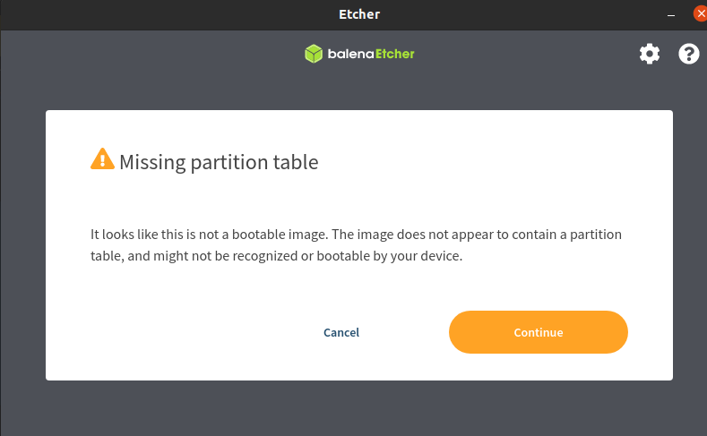

Running VMware on the Raspberry Pi 4
October 31, 2020

Did you know you can run VMware from the Raspberry Pi now? This will be great for students to be able to run their own datacenter at home for a lot less than buying servers!
Equipment Purchases
Running your own datacenter with RPi's is a great way to showcase your skills to an employer. This project shows you are actively utilizing your skills, making it easier to discuss technical experience. Lets begin by building our physical infrastructure. Here is a list of items I purchased to make this happen. Use this list as a reference/suggestion as you make your purchases.
- Raspberry Pi 4B with 8 GB RAM, Basic Kit ($89.95). I suggest using RPis with 8+ GB RAM to ensure you have enough room to run VMs.
- 2 micro SD cards (one for boot, one for ESXi). My suggestion is to buy a 1GB for boot, and anything larger than 16 GB for ESXi
- You will also need a keyboard, a USB drive (anything over 1 GB), a micro HDMI to HDMI cable, and an HDMI monitor
Setup
Pi Setup
Download the ISO file from this VMware page. There is a PDF (Fling on Raspberry Pi) that you will also need that has more links to download. At the bottom of page 5, you'll see the two you need to download.
I put everything into one folder for easy management through the process
SD Card Setup
I will mount the sd card to my laptop and use Disks (any disk formatter will do) to make one FAT partition.
This is the result after reformatting
With the drive ready, we can unzip firmware-master.zip from our downloads earlier and copy all files in the boot folder except the "kernel.img" files.
You can see the files within the folder and the ones copied to the boot partition.
Next, we will copy the entire contents of the RPi4_UEFI_Firmware.zip into the sd card. You will get some warnings about overwriting files; allow the system to overwrite them.
With that complete, we will make an edit to the config.txt file within the boot partition. At the bottom of the page, add "gpu_mem=16". This will limit the graphic's RAM allocation to 16 MB, which is more than enough.
USB Setup
Download Etcher and use it to format the USB drive with the "VMware-VMvisor-Installer-7.0.0-17068872.aarch64.iso" file downloaded earlier. Etcher will warn you about a missing boot partition; this is ok.
You are ready to add the sd cards into your Raspberry Pi and attach the USB drive to install.
Install
Install the sd card with the boot files in the proper slot, connect your USB drive with the ISO to USB 3.0, connect your second sdcard and keyboard to USB 2, and use the leftmost HDMI port to connect to a monitor.
That heatsink can be bought on Amazon for $17.99.
When you attach power, th pi will begin booting. Hit ESC quicky to get into the BIOS.
Within the BIOS, go to Device Manager > Raspberry Pi Settings > Advanced Configuration: Set "Limit RAM to 3 GB" to Disabled. Then save and "Reset" the PI to ensure the settings have taken effect.
When the system reboots, VMware should start up. When you see the "Loading ESXi installer," type SHIFT+O. The bottom will now change to say "runweaselcdromBoot". Add the following: autoPartitionOSDataSize=8192. This will make a partition of 8 GB on your SD card for the OS and will allow you to use the extra space on your SD card as a datastore. If you are using the Pi only, this is favorable. If you will be using an external storage (local or network), you can skip this setp.
From here, the installer process is straightforward. Once it completes, you will have ESXi installed and ready for work.
Adding vCenter
x64 Based System
NOTE: this section is optional. Cabrillo College students can get vCenter for free from this site.
Non-Cabrillo students can pay $200/yr for access to vCenter from VMware User Group's Advantage Membership.
Since vCenter is not capable of running on arm yet, you will need any Intel/AMD based computer to run VMware Player (free) and vCenter within it. I had an old (2009) x64 system laying around that I resurrected with some work. Any laptop or desktop with virtualization enabled would work just as fine; essentially, you will need a system that will stay on with the Pi cluster to manage it, just like you would with a large datacenter. I chose a desktop in order to add lots of storage space for vMotion.
On my particular tower install, I added some SSDs I had, turning them into a ZFS pool for storage using the following commands:
sudo apt update && sudo apt full-upgrade -y (Install updates)
apt install zfsutils-linux -y (Install ZFS)
sudo fdisk -l (See the list of installed drives)
sudo zpool create vmware raidz2 /dev/sda /dev/sdb /dev/sdc (Create a RAID array with 2 parity with all these drives)
zpool list (Verify the pool is up)
With this complete, I can turn this server into an NFS server for vCenter with the following commands:
sudo apt update
sudo apt install nfs-kernel-server -y
sudo systemctl start nfs-kernel-server.service
Edit the /etc/exports file to add the folder you wish to share. When you have made that change to the file, apply the change with sudo exportfs -a.
vCenter Appliance
For this next part, I used my mac since it has VMware Fusion installed; you can use any VMWare product to do this (Player, Fusion or Workstation). You should not use Virtualbox for this OVA file for reasons that will make sense in a bit. When you download vCenter, you will get an ISO file, which at first can be confusing, since VMware has been talking about the appliance as the replacement for installing vCenter on a VM. But, within the ISO is what you need to create the appliance. Within the "vcsa" folder, copy out the OVA file to your desktop.

Next, we will import the VM through File > Import. Select the file and accept the EULA.
Select the type of vCenter installation; I won't have many systems running, so I will go with the Tiny (note the hardware requirements at the bottom).
We can now preconfigure the system by going under each section and entering information. If you don't know what to type, click on the blue i on the right.
The process will take some time, but at the end you will have your vCenter instance ready to go. You can continue doing things like adding the ESXi hosts, creating VMs, vMotion, adding network storage and more!